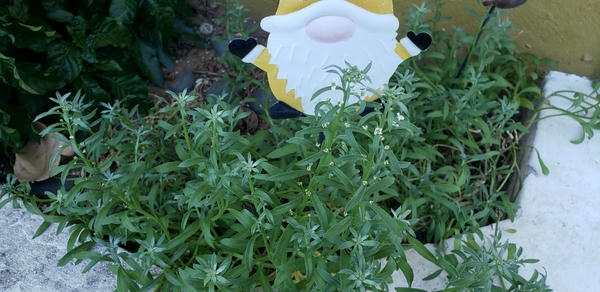
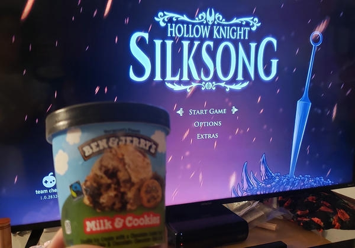
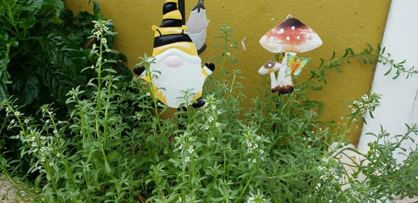
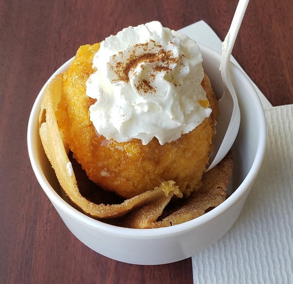
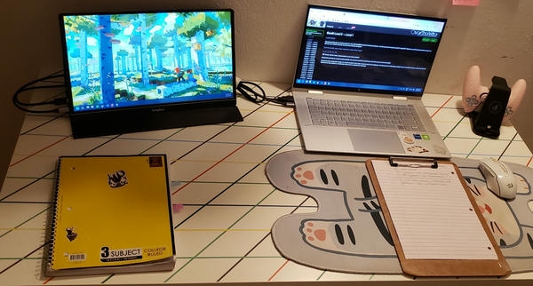
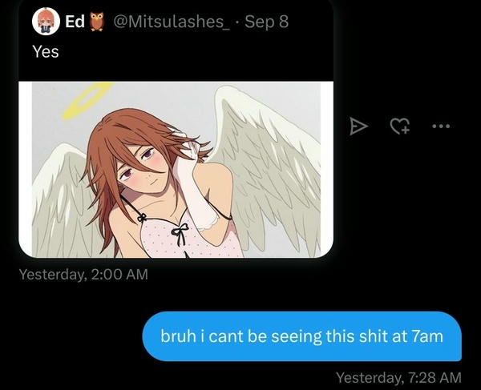

go back
2025 scrapbook
goals - january - february - march - april - may - june - july - august - september - october - november - december -
legend
□ = ongoing / ✘ = dropped / ✔ = completed / ⟳ = repeat
★☆☆☆☆ = did not like / ★★☆☆☆ = eh? / ★★★☆☆ = its okay / ★★★★☆ = enjoyable / ★★★★★ = perfect
goals for 2025
click on some on these for more info!
receive student aid.
i don't have to pay for my tuition anymore YAYYYYYY!
do more cooking recipes.
will be listing all of the new recipes that i tried AND TASTED GOOD here!
sandwiches de mezcla
ham soup
learn how to use static site generators like 11ty.
would love to implement it on my journal and gaming pages.
okay so i did learn. but i am not really satisfied with it for my site. will probably have a blog outside of doqmeat.com where i use it though. edit: currently using it for desteny.me
keep learning and practicing javascript!
been getting the hang of it a little bit! been able to implement more stuff! i will talk about it more on my learning in puclic pages.
learn more webdev stuff
SHOULD BE achievable eventually, though right now i am learning from a frontend roadmap so this might be a bit far away for now.
whenever i get some free time i wanna mess around with react and PHP!
survive.
self explanatory
get my first tattoo.
currently saving up for this! still need to find the exact place and the tattoo i wanna get.
found a place recommended by a friend! it had a couple of artists and they all have very unique art styles.
i'm gonna be real... i do not think i'll be able to save money for a tattoo but i let's see how the year goes....
i got some money but i spent it on something else..(it was the ps5)... will get a tattoo next year! i should have exactly what i want and the artist by that time at the very least!
listen to new music at least once per week!
RYM list
failing badly at this but thanks to an app i found, i'm lowkey back.
january
started my 2nd year @ uni. i love learning  , hooked on asian glow's 11100011
, hooked on asian glow's 11100011
media

- madoka magica: rebellion | ⟳ | ★★★★★
starting off the year with PEAK.
- half-life: alyx but the gnome is TOO AWARE | ✔ | ★★★★★
- puella magi madoka magica: wraith arc | □
found out there was a madoka manga that takes place between the events of the anime and rebellion (though i am not entirely sure if it's 100% canon...) via this video essay so i decided to give it a read. i feel a little mentally ill about PMMM at the moment. will probably hopefully put it on my reading log with more thoughts once i finish it.
- nosferatu | ★★★★☆
- twin peaks: the return | □
this show feels so evil from the first 2 seasons of twin peaks what the fuckkkk.
- balatro | ★★★★★
this shit is fucking insane. balatro has always interested me but i thought i was a bit too stupid for the game. i get it now. i've been loving the balatro yuri too.
- fallout new vegas: dead money dlc | ✔ | ★★★★☆ | gaming log
- severance (season 1) | ✔ | ★★★★★
oh i am having the time of my life. this shit is so good.
- severance (season 2) | □
- cat soup | ⟳ | ★★★★★
wanted to show my girlfriend this because she has never watched it. she said the little cat is very very evil and does not fuck with him. i fuck with him.
- interstellar | ⟳ | ★★★★★
got the chance to watch this in theater and in IMAX too.... so freaking good i loved this movie when i first watched it on a roku tv but the theater experience was very nice. love literally transcends time and space. so true.
- twilight | ⟳ | ★★★☆☆
the entire saga was free on tubi for a bit
- twilight: eclipse | ⟳ | ★★★☆☆
i accidentally watched this one first before new moon 
- twilight: new moon | ⟳ | ★★★☆☆
february
going to more activities around my campus!
media
- but i'm a cheerleader | ★★★★★
I LOVE LESBIANS  also can i just say the coloring in this movie is kinda gorgeous. like the sets feel like a little barbie dollhouse i love how this movie looks.
also can i just say the coloring in this movie is kinda gorgeous. like the sets feel like a little barbie dollhouse i love how this movie looks.
- easy a | ★★★★☆
i don't know why but i thought this movie was about emma stone being a horrible teacher. anyways, this was funny as hell.
- clementine (2019) | ★★☆☆☆
lowkey nothing burger movie. built a pretty decent suspense but ??? idk i feel like it never really did anything with it. the age gap is there for a reason and this movie does show how manipulative and dangerous these relationships can be but again. ? idk i just feel like not much happened here tbh. very pretty to look at though.
- love me | ★★★★☆
i saw a poster for this movie online from my local theaters and i was like wtf. why is kristen stewart a BUOY and steven yeun a SATELLITE????? and that was really all the information i needed to be intrigued enough to watch the movie. that and the fact that kristen stewart was doing a straight role. so intriguing. objectively this movie is probably just okay. but man that was kind of a crazy ride for me. i definitely laughed a lot. i will say that the animation bit was a bit rough. it was giving a better version of bitmojis. but like if you think about the movie's context then you know. you can let it pass. like if this is the best they could do with the budget they had then this is a pretty decent excuse for that. but this would probably be the only thing that i would bitch about. despite the animation not being the best, i do think the movie was very pretty to look at. anyway. if you are also intrigued i recommend not knowing anything about it. i think it's way more fun that way.
- puella magi madoka magica: wraith arc | ✔ | ★★★★☆ | reading log
- rec (2007) | ★★★★★ |
found footage excellence i don't think i've ever been this invested in a movie Like This + the setting (and characters) being in spain makes this so much fucking funny to watch and enjoy as well. you will never get a "JODER TIO PERO QUE OSTIA?????" from a blumhouse movie.
- rec (2009) | ★★★☆☆ |
watched this immediately after watching the first one just to have a bit more of background about what the fuck was going on (i was very very intrigued). def got what i was looking for but it will never compare to the raw thrill of the first one. i'm lowkey invested now so i might watch the other movies (which i've heard suck ass) at some point.
- twin peaks the return | ✔ | ★★★★★
david lynch you are a genius but that ending felt so awful to my heart. i'm still thinking about the show as a whole and that fucking ending.... what a curve ball.
- paddington 2 | ⟳ | ★★★★★
- paddington in peru | ★★★★☆
- the menu | ★★★★☆ |
needed something to have on the background while doing the dishes and hanging clothes. surprisingly good and funny too. did not go where in the direction i thought it would go which is pretty smart of them. anya taylor joy i would probably die for you.
march
went to an art exhibit for the first time! / got sick... / lost my voice
media
- flow | ★★★★★
- the rose of versailles | □
very slowly watching this whenever i have some free time at night. i originally started it because on amazon prime it has the title lady oscar and i was like hmm very interesting...
and when i watch the intro and it actually says the rose of versailles it suddently CLICKED. i have heard about this anime a little bit! so i'm super curious to see where it goes.
- the monkey | ★★★★☆
did not expect it to be that silly.
- marie antoinette | ★★★★☆
this was kinda gorgeous to look at and like surprisingly compelling.
- in between seasons | ★★★☆☆
not really what i expected but that's cool! honestly it's kind of a nice slow movie. but i feel like it didn't need to be that long...
- final destination | ⟳ | ★★★★★
watched it with my girlfriend! also prepping for the new movie coming out on may. the premise sounds super interesting but i will be very chill about it (i for some reason have a bit of a soft spot for these movies like yes they are very stupid and there is nothing really much going on in them but i still love them). clear rivers is so fucking gorgeous jesus.....
- severance (season 2) | ::finished:: | ::five stars::
insanely CRAZY good
april
i bought a really cutieful bag! / started taking steve minecraft on walks! journal log
media
- woman in the yard | ★★★☆☆
- transformers one | ⟳ | ★★★★☆
- the girl from the sea | ::repeat:: | ::five stars::
- our dreams at dusk | ::repeat:: | ::five stars::
- minecraft | ::repeat::
the minecraft phase is SO back.
- twilight | ::repeat:: | ::four stars::
not willingly, was at a birthday party and the person who's birthday it was, decided we were all watching twilight....
- happy death day 2U | ::four stars:: |
would yall believe me if i said that i have a soft spot for these movies and that i cried during this one....
- terminator 2 | ::five stars:: |
watched high af in theaters
- conclave | ::four stars::
may
finished 3rd semester of uni! / and bought a PS5 to celebrate and have some fun! / managed to pass calculus with a B because i got an A on the final!
media
- the elephant man (dir. david lynch) | ::five stars::
this was a crier movie...
- the rehearsal (season 2) | ::finished:: | ::five stars::
jesus christ. so if you're here, it must mean you're fine.
that kinda destroyed me. def peak.
- final destination bloodlines | ::five stars::
WOW this was so much fun.... as a final destination fan i am so pleased with this movie. rip tony todd 
- 28 days later | ::four stars::
- bloodborne | ::ongoing:: | ::four stars::
- pmmm : rebellion | ::repeat:: | ::five stars::
- infinity nikki | ::ongoing:: | ::four stars::
- overwatch 2 | ::repeat:: | ::four stars::
june
went on a walk on my birthday and got a delicious ice cream cake! / why did i get sick again....
media
- madoka magika (anime) | ::repeat:: | ::five stars::
this is getting a bit too serious like why am i taking notes...
- marvel rivals
like yeah sure it's fun but like... i still really like overwatch so kinda have no reason to play this... also i'm a jeff main.
- bring her back | ::five stars::
- the wicker man (1973) | ::four stars::
- mickey 17 | ::five stars::
i loved the worms
- belle | ::three stars::
- hana & alice | ::four stars::
- infamous first light | ::finished:: | ::five stars::
the entire time playing this i was just like fuck men fr
- go fish | ::five stars::
- the substance | ::five stars::
- now you see me | ::four stars::
- kpop demon hunters | ::three stars::
insanely pretty but idk if it was just me but i did not like at all the romance between the girl and boy (i dont remember their names sorry) and yeah its very corny but you can tell some love was put into this.
- outrage | ::four stars::
- a minecraft movie | ::two stars::
you know how they say curiosity killed the cat? yeah that's what happened. it honestly gets two stars because i laughed at some jokes like "my dad said math got debunked", the villager love story side plot (though it was so horrific to look at him), and chungus (please don't ever make me type that word again) whole character. overall just horrible slop as expected.
- 28 years later | ::five stars::
- friendship | ::four stars::
- mulholland drive | ::five stars::
left that theater feeling depressed as fuck! YAY!
- jojo's bizare adventure part 3 | ::ongoing::
july
WHY DID I GET SICK AGAIN? / went on a trip to florida!
media
- inland empire | ::four stars::
- hundreds of beavers | ::five stars::
- lucy | ::three stars:: |
my mom was BEGGING me to watch this ?!?!?!?
- superman | ::four stars::
- eddington | ::four stars:: |
okay ari aster.
- my melody & kuromi | ::finished::
SUCH a cutieful show... i think the stop motion animation is so well done as well!
august
getting sick again.... / back home from my trip / started my 4th uni semester
media
- jojo's bizare adventure (part 3) | ::finished:: | ::four stars::
i really enjoyed this ngl. made me laugh and cry.
- wednesday (season 2) | ::ongoing:: |
only watching this because i'm sick tbh. but also i'm kind of a fan of the girlies.
- monster (2023) | ::five stars:: |
this movie had be audibly sobbing LOUD so bad..... oh my god that was very beautiful to me but it hurt so badly. i am also a little bit scared because of that ending.... did they live? did they die and were reborn? im gonna throw up.
- together | ::four stars:: |
REALLY liked this tbh. i would have loved to explore more about that fuck ass cult but i am very pleased with what we got. we getting androgynous af over here!
- a little to the left | ::finished:: | ::four stars::
- madoka magica | ::repeat:: | ::finished:: | ::five stars::
made my girlfriend watch madoka :-) it was a very fun rewatch. i keep noticing more and more chairs.
- weapons | ::four stars::
kind of intense at times and then it just kind of took a silly turn. either way i laughed a lot.


september
silksong released, AMEN! / got selected for a $4k scholarship holy moly!

media


- madoka magica: rebellion | ::repeat:: | ::five stars::
during my madoka rewatch with my girlfriend this was the moment i was the most excited for. to watch for the 8th time rebellion... i love this movie to death and i have no fucking clue how walpurgisnacht will be able to be on par with this.
- silksong | ::ongoing:: |
oh but did i missed you SO MUCH!!!! i've barely played because i have so much going on with uni but man!!!! i missed video games.
- the conjuring: the last rites | ::three stars:: |
this was a mega whatever movie in terms of the plot. probably one of the weakest ones from the conjuring as well. but (hopefully) its a nice send off for the saga. i say hopefully cus you always see them making another one even after saying the previous one was the last movie.
- blood and fish by uki3


october
been so tired recentlyyyy all i ever do is study and study. | i did a workshop about CSS
media
- the summer hikaru died (season 1) | ::finished::
i lowkey can't do this anymore this shit almost killed me. i am a monster too.
i hide my true self so nobody else can see what i am
JUST KILL MEEEEEEE this stuff always gets to me so bad. nobody talk to me. i'll hopefully start the manga at some point soon.
- smiling friends (season 3) | ::ongoing::
- adventure time: distant lands | ::finished:: | ::four stars::
- chainsaw man: reze arc | ::five stars::
incredible movie i am not going to lie. angel devil does something INSANE to me whenever i see him. i can't wait to see it again.
- past. by kensuke ushio
- frankenstein (2025) | ::five stars::
i really liked this.
- fionna and cake (season 3) | ::four stars::
november
eating like crazy I LOVE FOOD. | fulfilling my childhood dream of buying monster high dolls | got invited to a friendsgiving and i had so much fun!
media
december
holy shit it's december | the way i lowkey don't gaf about my finals, still grinding though! | i have like 4 lego sets to build of my god | celebrated me and my gf's 4th anniversary and even made her a gift.
media
- smiling friends (season 3) | ::finished::
- five nights at freddy's 2 | ::one star::
it was very ass and watching it with people that won't stop talking adds to the ass factor but. damn those animatronics. it also sucks that i went at night on a thursday bc i had so much fun during the screening of five nights at freddy's because of the little kids that would explain the lore to their moms.
- new pop by aseul | ::repeat::
this album has been saving my life as of late
- eyes without a face | ::four stars::


")
.jpg "flowers from when i went to disney")


.jpg "bought a new tablet with the scholarship money i got and i love it so much!")
.png "pics from the friendsgiving dinner i had. were playing some fuckass amongus game")

.jpg "been getting really into monster high dolls")